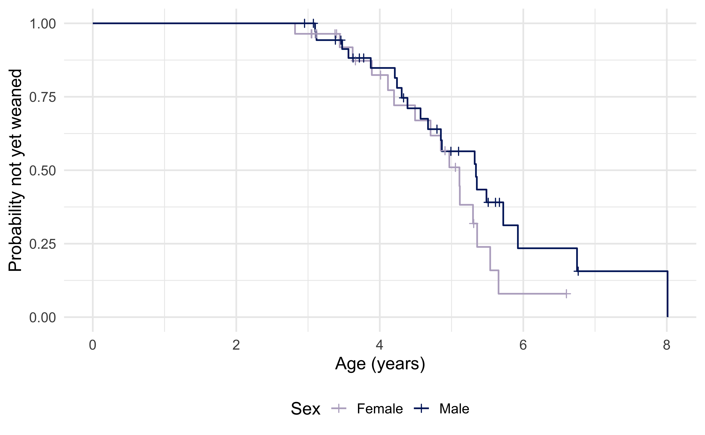
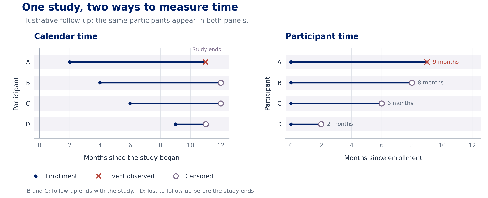
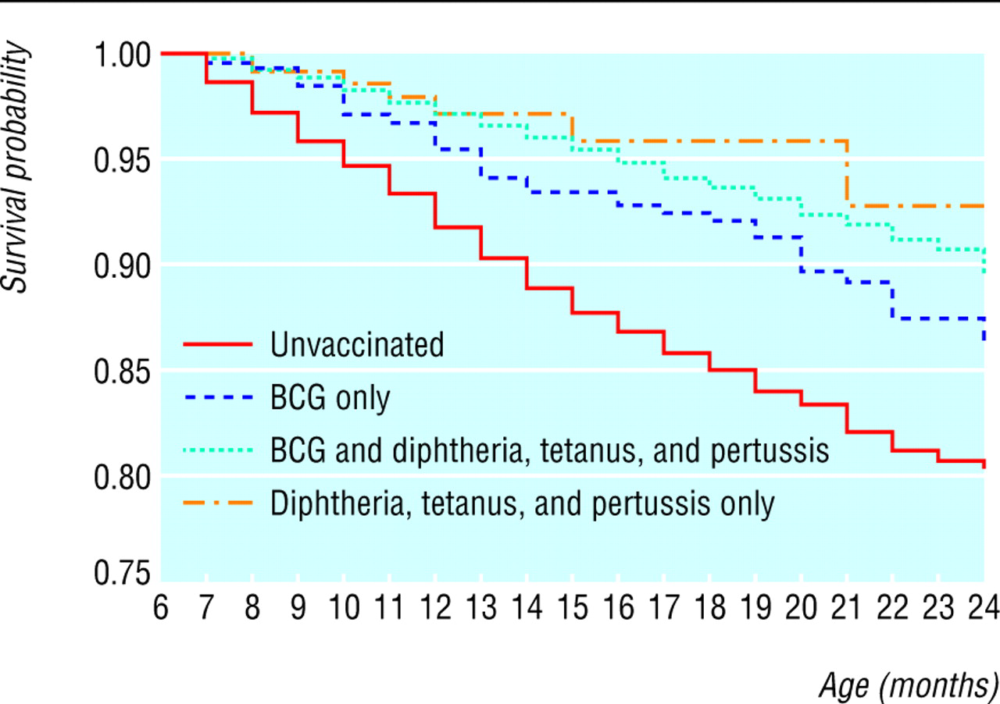
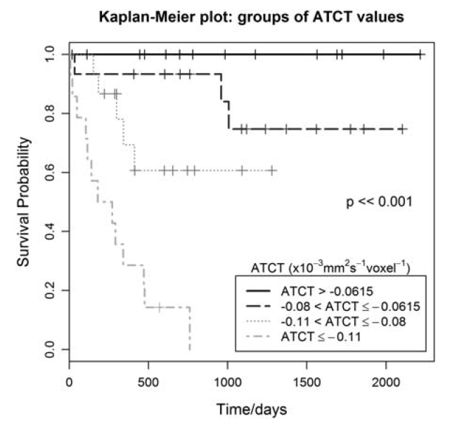
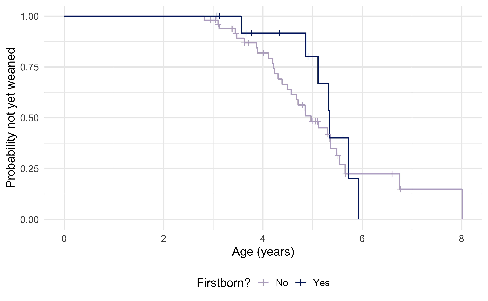
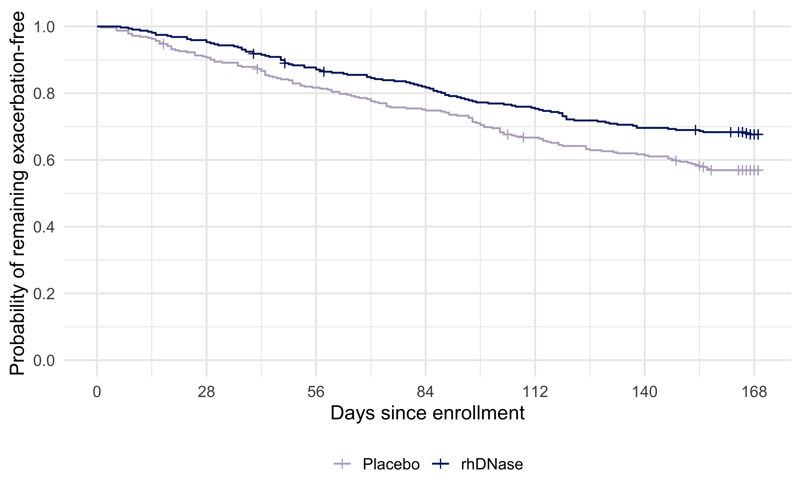

Introduction to Global Health Data Science
Duke University
STA/GLHLTH 198 Fall 2026
Survival analysis is a complex topic! The goal of our coverage is to give you the skills you need to understand results of simple descriptive statistics in this setting, and we will not have time to discuss more complex modeling of survival data in this course. Come see me in the future if you need to analyze survival data!
In many studies, the outcome of interest is the amount of time from an initial observation until the occurrence of some event of interest, e.g.
Typically, the event of interest is called a failure (even if it is a good thing). The time interval between a starting point and the failure is known as the survival time and is often represented by \(t\).
Certain aspects of survival data make data analysis particularly challenging.
When you hear someone talk about censoring, typically they mean right censoring, but there are other types of censoring that you may encounter.
Data may be censored in multiple ways:
Right censored: the usual type of censoring in health data, accommodated by standard models. In this case you see a study participant at the beginning of the study, but you may not follow them until the outcome occurs (or the outcome may never occur)
Left censored: a study participant may have experienced the event before the study begins. For example, you may want to study when kindergarteners reach a certain reading level, but some may be proficient readers already at the start of your study.
Interval censored: you don’t know exactly when an event happened, only that it happened between two times. For example, if a patient enrolled in a cancer screening study is cancer-free at the time of the first screening, \(t_1\) but has cancer at the time of the second screening, \(t_2\), you only know that cancer developed sometime after \(t_1\) but before \(t_2\)
It is important to distinguish between calendar time and participant time. In the redrawn plot, a filled circle marks enrollment, an “X” marks an observed event, and an open circle marks censoring.

The distribution of survival times is characterized by the survival function, represented by \(S(t)\). For a continuous random variable \(T\), \[S(t)=Pr(T>t)\] and \(S(t)\) represents the proportion of individuals who have not yet failed.
The graph of \(S(t)\) versus \(t\) is called a survival curve. The survival curve shows the proportion of survivors at any given time.

| Patient | Event time \(x\) | Event type |
|---|---|---|
| 1 | 4.5 | Death |
| 2 | 7.5 | Death |
| 3 | 8.5 | Censored |
| 4 | 11.5 | Death |
| 5 | 13.5 | Censored |
| 6 | 15.5 | Death |
| 7 | 16.5 | Death |
| 8 | 17.5 | Censored |
| 9 | 19.5 | Death |
| 10 | 21.5 | Censored |
How do we estimate the survival curve for these data?
Perhaps the most popular estimate of a survival curve is the Kaplan-Meier or product-limit estimate. This method is actually fairly intuitive. Define the following quantities.
\(I_t\): # at risk of failure at time \(t\); those who did not fail before \(t\) and those who were not censored before \(t\); also known as the risk set
\(d_t\): # who fail at time \(t\)
\(q_t=\frac{d_t}{I_t}\): estimated probability of failing at time \(t\)
\(S(t)\): cumulative probability of surviving beyond time \(t\), estimated as \[\hat{S}(t)=\prod_{t_i \leq t} \left(1-\frac{d_{t_i}}{I_{t_i}}\right).\]
the \(\prod\) symbol is for multiplication, e.g. \(\prod_{i=1}^3 x_i=x_1x_2x_3\) and \(\prod_{i=1}^5i=1 \times 2 \times 3 \times 4 \times 5\).
\[\hat{S}(t)=\prod_{t_i \leq t} \left(1-\frac{d_{t_i}}{I_{t_i}}\right)\]
At each time \(t\), the probability of surviving is just \(1-Pr(failing)\) (remember the complement rule, also known as the law of total probability!). Before there are any failures in the data, our estimated \(\hat{S}(t)=1\). At the time of the first failure, this probability falls below 1 and is simply one minus the probability of failing at that time, or \(1-\frac{\# ~ failures}{\#~at ~ risk~ of~ failing}\).
After the first failure, things get more complicated. At the time of the second failure, you can calculate \(1-\frac{\# ~ failures}{\# ~ at ~risk ~ of ~ failing}\), but this doesn’t provide the whole picture, as someone else has already died. In fact, this is the conditional probability of surviving now that you’ve made it past the time of the first failure.
I promised you’d see probability laws again! :)
Coming back to you next: the multiplicative rule!
\[\hat{S}(t)=\prod_{t_i \leq t} \left(1-\frac{d_{t_i}}{I_{t_i}}\right)\]
How do you then calculate the total (unconditional) probability of survival? That is just the product of the probability of surviving past the first failure times the conditional probability of surviving beyond the second failure given that you made it past the first, or
\[Pr(\text{survive past first and second times}) \] \[=Pr(\text{survive past first time})Pr(\text{survive past second time} \mid \text{survive past first time})\] \[=\left(1-\frac{\# ~ failures ~at ~failure~ time~ 1}{\# ~at~ risk ~of ~failing ~at ~failure ~time ~1}\right)\left(1-\frac{\# ~of ~ failures ~ at ~ failure ~ time~ 2}{\# ~ at ~ risk ~ of ~ failing ~ at ~ failure~ time~ 2}\right)\]
If someone is censored, they leave the observed risk set at that time and are excluded from later risk-set denominators. Their event may still occur after follow-up ends.
| \(t\) | # Failed: \(d_t\) | # Censored | # Left: \(I_{t+1}\) | \(\hat{S}(t)\) |
|---|---|---|---|---|
| 0.0 | 0 | 0 | ||
| 4.5 | 1 | 0 | ||
| 7.5 | 1 | 0 | ||
| 8.5 | 0 | 1 | ||
| 11.5 | 1 | 0 | ||
| 13.5 | 0 | 1 | ||
| 15.5 | 1 | 0 | ||
| 16.5 | 1 | 0 | ||
| 17.5 | 0 | 1 | ||
| 19.5 | 1 | 0 | ||
| 21.5 | 0 | 1 |
\[\hat{S}(t)=\prod_{t_i \leq t} \left(1-\frac{d_{t_i}}{I_{t_i}}\right)\] Remember \(d_t\) is the # who fail at time \(t\), and \(I_t\) is the # at risk of failure at time \(t\) (have not been censored and have not failed)
| \(t\) | # Failed: \(d_t\) | # Censored | # Left: \(I_{t+1}\) | \(\hat{S}(t)\) |
|---|---|---|---|---|
| 0.0 | 0 | 0 | 10 | 1 |
| 4.5 | 1 | 0 | ||
| 7.5 | 1 | 0 | ||
| 8.5 | 0 | 1 | ||
| 11.5 | 1 | 0 | ||
| 13.5 | 0 | 1 | ||
| 15.5 | 1 | 0 | ||
| 16.5 | 1 | 0 | ||
| 17.5 | 0 | 1 | ||
| 19.5 | 1 | 0 | ||
| 21.5 | 0 | 1 |
\[\hat{S}(t)=\prod_{t_i \leq t} \left(1-\frac{d_{t_i}}{I_{t_i}}\right)\]
\(\hat{S}(0)=1\)
| \(t\) | # Failed: \(d_t\) | # Censored | # Left: \(I_{t+1}\) | \(\hat{S}(t)\) |
|---|---|---|---|---|
| 0.0 | 0 | 0 | 10 | 1 |
| 4.5 | 1 | 0 | 9 | \(1 \times \left(1-\frac{1}{10}\right)=0.9\) |
| 7.5 | 1 | 0 | ||
| 8.5 | 0 | 1 | ||
| 11.5 | 1 | 0 | ||
| 13.5 | 0 | 1 | ||
| 15.5 | 1 | 0 | ||
| 16.5 | 1 | 0 | ||
| 17.5 | 0 | 1 | ||
| 19.5 | 1 | 0 | ||
| 21.5 | 0 | 1 |
\[\hat{S}(t)=\prod_{t_i \leq t} \left(1-\frac{d_{t_i}}{I_{t_i}}\right)\]
\[Pr(\text{survive past time 4.5}) \] \[=Pr(\text{survive past time 0}) \] \[\times Pr(\text{survive past time 4.5} \mid \text{survive past time 0})\]
| \(t\) | # Failed: \(d_t\) | # Censored | # Left: \(I_{t+1}\) | \(\hat{S}(t)\) |
|---|---|---|---|---|
| 0.0 | 0 | 0 | 10 | 1 |
| 4.5 | 1 | 0 | 9 | 0.9 |
| 7.5 | 1 | 0 | 8 | \(0.9 \times \left(1-\frac{1}{9}\right)=0.8\) |
| 8.5 | 0 | 1 | ||
| 11.5 | 1 | 0 | ||
| 13.5 | 0 | 1 | ||
| 15.5 | 1 | 0 | ||
| 16.5 | 1 | 0 | ||
| 17.5 | 0 | 1 | ||
| 19.5 | 1 | 0 | ||
| 21.5 | 0 | 1 |
\[\hat{S}(t)=\prod_{t_i \leq t} \left(1-\frac{d_{t_i}}{I_{t_i}}\right)\]
\[Pr(\text{survive past time 7.5}) \] \[=Pr(\text{survive past time 4.5})\] \[\times Pr(\text{survive past time 7.5} \mid \text{survive past time 4.5})\]
| \(t\) | # Failed: \(d_t\) | # Censored | # Left: \(I_{t+1}\) | \(\hat{S}(t)\) |
|---|---|---|---|---|
| 0.0 | 0 | 0 | 10 | 1 |
| 4.5 | 1 | 0 | 9 | 0.9 |
| 7.5 | 1 | 0 | 8 | 0.8 |
| 8.5 | 0 | 1 | 7 | \(0.8 \times \left(1-\frac{0}{8}\right)=0.8\) |
| 11.5 | 1 | 0 | ||
| 13.5 | 0 | 1 | ||
| 15.5 | 1 | 0 | ||
| 16.5 | 1 | 0 | ||
| 17.5 | 0 | 1 | ||
| 19.5 | 1 | 0 | ||
| 21.5 | 0 | 1 |
\[\hat{S}(t)=\prod_{t_i \leq t} \left(1-\frac{d_{t_i}}{I_{t_i}}\right)\]
\[Pr(\text{survive past time 8.5}) \] \[=Pr(\text{survive past time 7.5})\] \[\times Pr(\text{survive past time 8.5} \mid \text{survive past time 7.5})\]
| \(t\) | # Failed: \(d_t\) | # Censored | # Left: \(I_{t+1}\) | \(\hat{S}(t)\) |
|---|---|---|---|---|
| 0.0 | 0 | 0 | 10 | 1 |
| 4.5 | 1 | 0 | 9 | 0.9 |
| 7.5 | 1 | 0 | 8 | 0.8 |
| 8.5 | 0 | 1 | 7 | 0.8 |
| 11.5 | 1 | 0 | 6 | \(0.8 \times \left(1-\frac{1}{7}\right)=0.69\) |
| 13.5 | 0 | 1 | ||
| 15.5 | 1 | 0 | ||
| 16.5 | 1 | 0 | ||
| 17.5 | 0 | 1 | ||
| 19.5 | 1 | 0 | ||
| 21.5 | 0 | 1 |
\[\hat{S}(t)=\prod_{t_i \leq t} \left(1-\frac{d_{t_i}}{I_{t_i}}\right)\]
\[Pr(\text{survive past time 11.5}) \] \[=Pr(\text{survive past time 8.5})\] \[\times Pr(\text{survive past time 11.5} \mid \text{survive past time 8.5})\]
| \(t\) | # Failed: \(d_t\) | # Censored | # Left: \(I_{t+1}\) | \(\hat{S}(t)\) |
|---|---|---|---|---|
| 0.0 | 0 | 0 | 10 | 1 |
| 4.5 | 1 | 0 | 9 | 0.9 |
| 7.5 | 1 | 0 | 8 | 0.8 |
| 8.5 | 0 | 1 | 7 | 0.8 |
| 11.5 | 1 | 0 | 6 | 0.69 |
| 13.5 | 0 | 1 | 5 | \(0.69 \times \left(1-\frac{0}{6}\right)=0.69\) |
| 15.5 | 1 | 0 | ||
| 16.5 | 1 | 0 | ||
| 17.5 | 0 | 1 | ||
| 19.5 | 1 | 0 | ||
| 21.5 | 0 | 1 |
\[\hat{S}(t)=\prod_{t_i \leq t} \left(1-\frac{d_{t_i}}{I_{t_i}}\right)\]
\[Pr(\text{survive past time 13.5}) \] \[=Pr(\text{survive past time 11.5})\] \[\times Pr(\text{survive past time 13.5} \mid \text{survive past time 11.5})\]
| \(t\) | # Failed: \(d_t\) | # Censored | # Left: \(I_{t+1}\) | \(\hat{S}(t)\) |
|---|---|---|---|---|
| 0.0 | 0 | 0 | 10 | 1 |
| 4.5 | 1 | 0 | 9 | 0.9 |
| 7.5 | 1 | 0 | 8 | 0.8 |
| 8.5 | 0 | 1 | 7 | 0.8 |
| 11.5 | 1 | 0 | 6 | 0.69 |
| 13.5 | 0 | 1 | 5 | 0.69 |
| 15.5 | 1 | 0 | 4 | \(0.69 \times \left(1-\frac{1}{5}\right)=0.552\) |
| 16.5 | 1 | 0 | ||
| 17.5 | 0 | 1 | ||
| 19.5 | 1 | 0 | ||
| 21.5 | 0 | 1 |
\[\hat{S}(t)=\prod_{t_i \leq t} \left(1-\frac{d_{t_i}}{I_{t_i}}\right)\]
\[Pr(\text{survive past time 15.5}) \] \[=Pr(\text{survive past time 13.5})\] \[\times Pr(\text{survive past time 15.5} \mid \text{survive past time 13.5})\]
| \(t\) | # Failed: \(d_t\) | # Censored | # Left: \(I_{t+1}\) | \(\hat{S}(t)\) |
|---|---|---|---|---|
| 0.0 | 0 | 0 | 10 | 1 |
| 4.5 | 1 | 0 | 9 | 0.9 |
| 7.5 | 1 | 0 | 8 | 0.8 |
| 8.5 | 0 | 1 | 7 | 0.8 |
| 11.5 | 1 | 0 | 6 | 0.69 |
| 13.5 | 0 | 1 | 5 | 0.69 |
| 15.5 | 1 | 0 | 4 | 0.552 |
| 16.5 | 1 | 0 | 3 | \(0.552 \times \left(1-\frac{1}{4}\right)=0.414\) |
| 17.5 | 0 | 1 | ||
| 19.5 | 1 | 0 | ||
| 21.5 | 0 | 1 |
\[\hat{S}(t)=\prod_{t_i \leq t} \left(1-\frac{d_{t_i}}{I_{t_i}}\right)\]
\[Pr(\text{survive past time 16.5}) \] \[=Pr(\text{survive past time 15.5})\] \[\times Pr(\text{survive past time 16.5} \mid \text{survive past time 15.5})\]
| \(t\) | # Failed: \(d_t\) | # Censored | # Left: \(I_{t+1}\) | \(\hat{S}(t)\) |
|---|---|---|---|---|
| 0.0 | 0 | 0 | 10 | 1 |
| 4.5 | 1 | 0 | 9 | 0.9 |
| 7.5 | 1 | 0 | 8 | 0.8 |
| 8.5 | 0 | 1 | 7 | 0.8 |
| 11.5 | 1 | 0 | 6 | 0.69 |
| 13.5 | 0 | 1 | 5 | 0.69 |
| 15.5 | 1 | 0 | 4 | 0.552 |
| 16.5 | 1 | 0 | 3 | 0.414 |
| 17.5 | 0 | 1 | 2 | \(0.414 \times \left(1-\frac{0}{3}\right)=0.414\) |
| 19.5 | 1 | 0 | ||
| 21.5 | 0 | 1 |
\[\hat{S}(t)=\prod_{t_i \leq t} \left(1-\frac{d_{t_i}}{I_{t_i}}\right)\]
\[Pr(\text{survive past time 17.5}) \] \[=Pr(\text{survive past time 16.5})\] \[\times Pr(\text{survive past time 17.5} \mid \text{survive past time 16.5})\]
| \(t\) | # Failed: \(d_t\) | # Censored | # Left: \(I_{t+1}\) | \(\hat{S}(t)\) |
|---|---|---|---|---|
| 0.0 | 0 | 0 | 10 | 1 |
| 4.5 | 1 | 0 | 9 | 0.9 |
| 7.5 | 1 | 0 | 8 | 0.8 |
| 8.5 | 0 | 1 | 7 | 0.8 |
| 11.5 | 1 | 0 | 6 | 0.69 |
| 13.5 | 0 | 1 | 5 | 0.69 |
| 15.5 | 1 | 0 | 4 | 0.552 |
| 16.5 | 1 | 0 | 3 | 0.414 |
| 17.5 | 0 | 1 | 2 | 0.414 |
| 19.5 | 1 | 0 | 1 | \(0.414 \times \left(1-\frac{1}{2}\right)=0.207\) |
| 21.5 | 0 | 1 |
\[\hat{S}(t)=\prod_{t_i \leq t} \left(1-\frac{d_{t_i}}{I_{t_i}}\right)\]
\[Pr(\text{survive past time 19.5}) \] \[=Pr(\text{survive past time 17.5})\] \[\times Pr(\text{survive past time 19.5} \mid \text{survive past time 17.5})\]
| \(t\) | # Failed: \(d_t\) | # Censored | # Left: \(I_{t+1}\) | \(\hat{S}(t)\) |
|---|---|---|---|---|
| 0.0 | 0 | 0 | 10 | 1 |
| 4.5 | 1 | 0 | 9 | 0.9 |
| 7.5 | 1 | 0 | 8 | 0.8 |
| 8.5 | 0 | 1 | 7 | 0.8 |
| 11.5 | 1 | 0 | 6 | 0.69 |
| 13.5 | 0 | 1 | 5 | 0.69 |
| 15.5 | 1 | 0 | 4 | 0.552 |
| 16.5 | 1 | 0 | 3 | 0.414 |
| 17.5 | 0 | 1 | 2 | 0.414 |
| 19.5 | 1 | 0 | 1 | 0.207 |
| 21.5 | 0 | 1 | 0 | \(0.207 \times \left(1-\frac{0}{1}\right)=0.207\) |
\[\hat{S}(t)=\prod_{t_i \leq t} \left(1-\frac{d_{t_i}}{I_{t_i}}\right)\]
\[Pr(\text{survive past time 21.5}) \] \[=Pr(\text{survive past time 19.5})\] \[\times Pr(\text{survive past time 21.5} \mid \text{survive past time 19.5})\]
In between failure times, the KM estimate does not change but is constant. This gives the estimated survival function its step-like appearance (we call this type of function a step function).
ATCT is an imaging-based biomarker of tumor prognosis.

These data describe wild chimpanzees in Tanzania and are provided courtesy of Prof. Elizabeth Lonsdorf at Duke Lemur Center. We study the age at which offspring are weaned.
| Variable | Meaning |
|---|---|
weanedage_yrs |
Age in years at weaning or censoring |
weaned |
Event indicator: 1 = weaned, 0 = censored |
B_Sex |
Offspring sex: F = female, M = male |
B_FirstBorn |
Firstborn status: Y = yes, N = no |
There are 65 chimpanzees, with 37 observed weaning events and 28 censored observations.
The event is weaning. Here, \(S(t)=P(T>t)\) is the probability of not yet being weaned at age \(t\).
weaning <- read_excel(
"../data/weaning_lonsdorf.xlsx",
sheet = "Data",
na = c("", "NA", "na")
) %>%
select(id, momid, weanedage_yrs, weaned, B_Sex, B_FirstBorn) %>%
mutate(
B_Sex = factor(B_Sex, levels = c("F", "M"),
labels = c("Female", "Male")),
B_FirstBorn = factor(B_FirstBorn, levels = c("N", "Y"),
labels = c("No", "Yes"))
)
A higher curve means a larger estimated probability of still being unweaned at a given age. The marks show censored observations.
weaning_sex_fit <- survfit2(
Surv(weanedage_yrs, weaned) ~ B_Sex,
data = weaning
)
ggsurvfit(weaning_sex_fit) +
add_censor_mark() +
scale_color_manual(values = c("Female" = "#B9AEC8", "Male" = "#012169")) +
labs(
x = "Age (years)", y = "Probability not yet weaned",
color = "Sex"
) +
theme_minimal(base_size = 16) +
theme(legend.position = "bottom")
At a given age, which group has the larger estimated probability of not yet being weaned? Does the pattern look the same across the age range?
weaning_firstborn_fit <- survfit2(
Surv(weanedage_yrs, weaned) ~ B_FirstBorn,
data = weaning
)
ggsurvfit(weaning_firstborn_fit) +
add_censor_mark() +
scale_color_manual(values = c("No" = "#B9AEC8", "Yes" = "#012169")) +
labs(
x = "Age (years)", y = "Probability not yet weaned",
color = "Firstborn?"
) +
theme_minimal(base_size = 16) +
theme(legend.position = "bottom")The median weaning age is the first age at which the estimated probability of not yet being weaned is at most 0.5.
If the curve never reaches 0.5, the median cannot be estimated from the available follow-up. Some confidence limits may also be unavailable.
The log-rank test compares the time-to-weaning distributions between groups and is closely related to the \(chi^2\) test we studied for contingency tables. We separately compare sexes and firstborn groups.
For each comparison, \(H_0\) is that the groups have the same survival function. The alternative is that the survival functions differ.
| Comparison | Chi-square statistic | p-value |
|---|---|---|
| Sex | 1.623 | 0.203 |
| Firstborn status | 0.367 | 0.545 |
The p-values are 0.203 for sex and 0.545 for firstborn status.
Neither test provides strong evidence of different weaning distributions at the 5% significance level. This does not establish that the distributions are identical.
These simple log-rank tests treat offspring as independent. Some chimps share a mother; the Cox model on the next slide allows for this dependence when estimating uncertainty.
We can use a Cox proportional hazards model to examine sex and firstborn status together.
B_Sex and B_FirstBorn.The model compares the instantaneous rates, or hazards, of weaning among chimpanzees who have not yet been weaned at a given age, holding the other predictor constant.
Key assumptions include:
Some offspring share a mother. We use cluster = momid to allow for this dependence in the standard errors and confidence intervals.
| Comparison | Hazard ratio | 95% CI | p-value |
|---|---|---|---|
| Male vs. female | 0.67 | (0.38,1.16) | 0.153 |
| Firstborn vs. not firstborn | 0.87 | (0.48,1.57) | 0.636 |
The reference groups are female and not firstborn. Each hazard ratio adjusts for the other predictor.
cox_results %>%
mutate(
term = recode(term,
"B_SexMale" = "Male vs. female",
"B_FirstBornYes" = "Firstborn vs. not firstborn"
),
CI = sprintf("(%.2f,%.2f)", conf.low, conf.high)
) %>%
select(term, estimate, CI, p.value) %>%
knitr::kable(
digits = c(0, 2, 0, 3),
row.names = FALSE,
col.names = c("Comparison", "Hazard ratio", "95% CI", "p-value")
)The estimated HR comparing males with females is 0.67. At the same age and firstborn status, males have an estimated 0.67 times the weaning hazard of females.
The estimated HR comparing firstborn with other offspring is 0.87, conditional on sex.
A hazard ratio describes a ratio of instantaneous rates or hazards, not a ratio of median weaning ages. Consider the confidence intervals as well as the point estimates.
Cystic fibrosis can cause thick mucus to accumulate in the lungs, making it harder to clear infections.
rhDNase is an inhaled enzyme that breaks down extracellular DNA in mucus and helps make the mucus easier to clear.
Researchers conducted a randomized, double-blind trial comparing rhDNase with placebo.
Does rhDNase help patients go longer without a pulmonary exacerbation requiring intravenous (IV) antibiotics?
Our analysis includes participants without an exacerbation at enrollment and follows them for up to 169 days. Each participant contributes one observation.
| Variable | Meaning |
|---|---|
treatment |
Placebo or rhDNase |
time |
Days from enrollment to the first exacerbation or censoring |
status = 1 |
An exacerbation was observed |
status = 0 |
Follow-up ended before an exacerbation was observed |
There are 641 participants, with 240 observed events and 401 censored observations.
Here, \(S(t)=P(T>t)\) describes the probability of remaining free of a first exacerbation beyond day \(t\).

Which group has the higher estimated probability of remaining exacerbation-free? What do the marks on the curves represent?
We test \(H_0\): the two groups have the same survival function.
| Chi-square | df | p-value |
|---|---|---|
| 8.06 | 1 | 0.005 |
The log-rank test gives \(p\) = 0.005.
If a curve stays above 0.5 throughout follow-up, can we estimate the median time to the first exacerbation?
Let \(X_i=1\) for rhDNase and \(X_i=0\) for placebo.
\[h(t\mid X_i)=h_0(t)\exp(\beta_1X_i), \qquad HR=\exp(\beta_1).\]
| Comparison | Hazard ratio | 95% CI | p-value |
|---|---|---|---|
| rhDNase vs. placebo | 0.69 | (0.54,0.89) | 0.005 |
Placebo is the reference group. A hazard ratio below 1 favors rhDNase for this outcome.
cf_cox <- coxph(
Surv(time, status) ~ treatment,
data = cf_first
)
tidy(cf_cox, exponentiate = TRUE, conf.int = TRUE) %>%
mutate(
term = recode(term, "treatmentrhDNase" = "rhDNase vs. placebo"),
CI = sprintf("(%.2f,%.2f)", conf.low, conf.high)
) %>%
select(term, estimate, CI, p.value) %>%
knitr::kable(
digits = c(0, 2, 0, 3), row.names = FALSE,
col.names = c("Comparison", "Hazard ratio", "95% CI", "p-value")
)The estimated hazard ratio is 0.69, with 95% CI (0.54,0.89) and \(p\) = 0.005.
At a given time among participants who have remained exacerbation-free, the rhDNase group has an estimated 31% lower hazard of a first exacerbation than the placebo group.
The confidence interval lies below 1, providing evidence of a lower hazard with rhDNase.
Random assignment helps balance characteristics present before treatment. The proportional hazards assumption lets us summarize the treatment comparison with one hazard ratio.
How would the interpretation change if the hazard ratio were greater than 1?
Linear regression: interpret estimate \(\hat{\beta}_1\) corresponding to covariate \(x\) as the expected increase in \(y_i\) comparing those with \(x_{i}=c+1\) to those with \(x_{i}=c\), holding all other factors constant
Logistic regression: interpret estimate \(\exp(\hat{\beta}_1)\) corresponding to covariate \(x\) as the ratio of odds of \(y_i=1\) comparing those with \(x_{i}=c+1\) to those with \(x_{i}=c\), holding all other factors constant
Cox proportional hazards (survival) model: interpret estimate \(\exp(\hat{\beta}_1)\) corresponding to covariate \(x\) as the ratio of hazards of failure comparing those with \(x_{i}=c+1\) to those with \(x_{i}=c\), holding all other factors constant